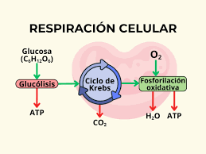
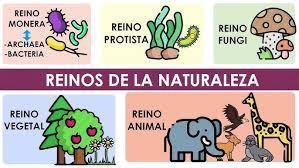
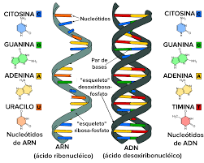
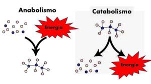
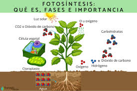
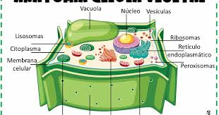

Respiración celular
Respiración celular, el proceso mediante el cual los organismos se combinan oxígeno con alimentos moléculas, desviando el energía química en estas sustancias en actividades de soporte vital y descartándolas, como productos de desecho, dióxido de carbono y agua. Los organismos que no dependen del oxígeno degradan los alimentos en un proceso llamado fermentación. (Para tratamientos más prolongados de diversos aspectos de la respiración celular, ver ciclo del ácido tricarboxílico y metabolismo.)
Respiración Celular Aeróbica.
Etapas: La respiración aeróbica consta de tres etapas principales: glucólisis, el ciclo de Krebs y la fosforilación oxidativa.
Productos: En presencia de oxígeno, la glucosa se descompone en dióxido de carbono y agua, liberando energía que se almacena en moléculas de ATP.
Importancia: La respiración aeróbica es el proceso principal por el cual las células obtienen energía en organismos eucariotas.
Respiración Celular Anaeróbica.
Ocurrencia: Se produce cuando no hay suficiente oxígeno disponible, como en las células musculares durante el ejercicio intenso.
Fermentación: En este caso, la glucosa se descompone a través de la fermentación, produciendo menos ATP que la respiración aeróbica, pero permitiendo la producción continua de energía en ausencia de oxígeno.
Tipos: Existen diferentes tipos de fermentación, como la láctica (en músculos) y la alcohólica (en levaduras).

Reinos de la vida
Los reinos de la vida son clasificaciones amplias de los seres vivos, basadas en características evolutivas y celulares. Actualmente, se reconocen siete reinos: Animalia (animales), Plantae (plantas), Fungi (hongos), Protozoa (protozoarios), Chromista (cromistas), Archaea (arqueas) y Bacteria (bacterias). Estos reinos se agrupan en dos dominios: Prokaryota (Archaea y Bacteria) y Eukaryota (Protozoa, Chromista, Fungi, Plantae y Animalia).
Reino Animalia (animales): Organismos multicelulares heterótrofos, que obtienen su alimento consumiendo otros organismos. Incluyen a los animales vertebrados e invertebrados.
Reino Plantae (plantas): Organismos multicelulares autótrofos, capaces de realizar la fotosíntesis para producir su propio alimento.
Reino Fungi (hongos): Organismos eucariotas, principalmente multicelulares, que obtienen su alimento de materia orgánica en descomposición.
Reino Protozoa (protozoarios): Organismos unicelulares eucariotas, que pueden ser tanto autótrofos como heterótrofos.
Reino Chromista (cromistas): Organismos eucariotas, principalmente acuáticos, que incluyen algas y algunos grupos relacionados.
Reino Archaea (arqueas): Organismos procariotas unicelulares, que se caracterizan por vivir en ambientes extremos.
Reino Bacteria (bacterias): Organismos procariotas unicelulares, que se encuentran en una amplia variedad de hábitats.

ADN y ARN
El ADN, o ácido desoxirribonucleico, es el material que contiene la información hereditaria en los humanos y casi todos los demás organismos. Casi todas las células del cuerpo de una persona tienen el mismo ADN. La mayor parte del ADN se encuentra en el núcleo celular (o ADN nuclear), pero también se puede encontrar una pequeña cantidad de ADN en las mitocondrias (ADN mitocondrial o ADNmt). Las mitocondrias son estructuras dentro de las células que convierten la energía de los alimentos para que las células la puedan utilizar.
La información en el ADN se almacena como un código compuesto por cuatro bases químicas, adenina (A), guanina (G), citosina (C) y timina (T). El ADN humano consta de unos 3 mil millones de bases, y más del 99 por ciento de esas bases son iguales en todas las personas. El orden o secuencia de estas bases determina la información disponible para construir y mantener un organismo, similar a la forma en que las letras del alfabeto aparecen en un cierto orden para formar palabras y oraciones.
El ácido ribonucleico (ARN) es un ácido presente en todas las células vivas que tiene similitudes estructurales con el ADN. Sin embargo, a diferencia del ADN, es más frecuente que el ARN esté formado por una única cadena. Una molécula de ARN tiene un eje formado por grupos fosfato alternantes y el azúcar ribosa, en lugar de la desoxirribosa del ADN. Unida a cada azúcar hay una de cuatro bases: adenina (A), uracilo (U), citosina (C) o guanina (G). Existen diferentes tipos de ARN en las células: ARN mensajero (ARNm), ARN ribosómico (ARNr) y ARN de transferencia (ARNt). Además, algunos ARN participan en la regulación de la expresión génica. Hay determinados virus que usan ARN como material genómico propio.

Fases y tipos de Metabolismo
El metabolismo se divide en dos fases principales: anabolismo y catabolismo. El anabolismo es la fase constructiva, donde se forman moléculas complejas a partir de otras más simples, requiriendo energía. El catabolismo, por otro lado, es la fase destructiva, donde moléculas complejas se descomponen en otras más simples, liberando energía.
Fases del Metabolismo:
Anabolismo (Fase Constructiva): En esta fase, se utilizan moléculas simples, como aminoácidos y glucosa, para construir moléculas más complejas, como proteínas y glucógeno. Este proceso requiere energía, que se obtiene del catabolismo o del consumo de alimentos.
Catabolismo (Fase Destructiva): En esta fase, moléculas complejas, como proteínas, grasas y carbohidratos, se descomponen en moléculas más simples, liberando energía en el proceso. Esta energía se utiliza para alimentar el anabolismo y para otras funciones corporales.
Tipos de Metabolismo (según nutrición):
Metabolismo Proteico: Se caracteriza por una mayor preferencia por las proteínas como fuente de energía y construcción de tejidos. Las personas con este tipo de metabolismo suelen tener un apetito voraz por ali
Metabolismo Carbohidrático: Se caracteriza por una mayor preferencia por los carbohidratos como fuente de energía. Las personas con este tipo de metabolismo suelen tener un apetito por los carbohidratos y pueden ser más propensas a ganar peso si no se controlan.
Metabolismo Mixto: Es una combinación de los dos anteriores, donde el cuerpo utiliza tanto proteínas como carbohidratos de manera equilibrada para obtener energía y construir tejidos.

Fotosíntesis
La fotosíntesis es el proceso por el cual las plantas, algas y algunas bacterias convierten la energía de la luz solar en energía química, produciendo azúcares que utilizan como alimento y liberando oxígeno como subproducto. Este proceso es esencial para la vida en la Tierra, ya que permite la producción de oxígeno y la creación de materia orgánica.
Absorción de luz: La clorofila, un pigmento verde presente en los cloroplastos de las células vegetales, absorbe la energía de la luz solar.
Conversión de energía: La energía de la luz se utiliza para convertir el dióxido de carbono (CO2) y el agua (H2O) en glucosa (un tipo de azúcar).
Liberación de oxígeno: Durante este proceso, se libera oxígeno a la atmósfera como subproducto.

Célula animal
Una célula animal es la unidad que compone los tejidos animales. Es una célula eucariota caracterizada por la presencia de núcleo, membrana plasmática y citoplasma. Se diferencia de la célula vegetal por la ausencia de pared celular y cloroplastos. Además se pueden encontrar células más pequeñas y más abundantes en comparación con las de una célula vegetal.
La célula animal, unidad básica de los organismos multicelulares, posee diversas partes con funciones especializadas. La membrana plasmática protege y regula el intercambio de sustancias con el entorno. El citoplasma, que incluye el citoesqueleto, proporciona soporte estructural y permite el movimiento de organelos. Dentro del citoplasma, el retículo endoplasmático sintetiza proteínas y lípidos, mientras que el aparato de Golgi los procesa y empaqueta. Las mitocondrias generan energía mediante la respiración celular. El núcleo, centro de control, contiene el ADN, esencial para la herencia y función celular. Además, los lisosomas se encargan de la digestión intracelular.
Célula vegetal
Célula vegetal, la unidad básica de todos plantas. Las células vegetales, al igual que las células animales, lo son eucariota, lo que significa que tienen una membrana unida núcleo y organelos. A continuación se presenta un breve resumen de algunas de las principales características de planta células. Para una discusión más profunda de las células, ver célula.
La célula vegetal está compuesta por varias partes con funciones específicas. La pared celular, compuesta principalmente de celulosa, proporciona soporte y protección a la célula. El cloroplasto, que contiene clorofila, es el sitio de la fotosíntesis, donde la planta produce alimento. La vacuola central, grande y llena de líquido, ayuda a mantener la forma de la célula y almacena agua y nutrientes. El núcleo, que contiene el material genético (ADN), controla las actividades celulares. Finalmente, la membrana plasmática, que rodea la célula, regula el paso de sustancias hacia adentro y hacia afuera.
